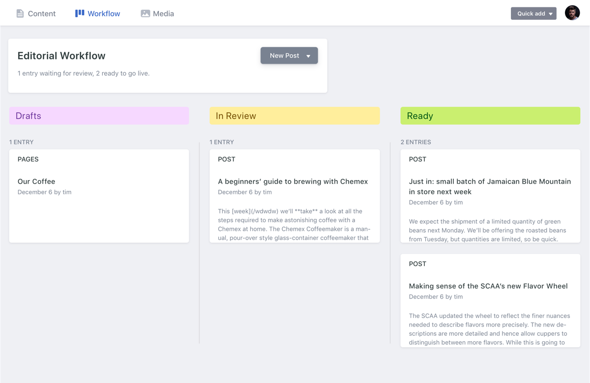

Como transformar um artigo de blog em Instagram, LinkedIn e e-mail
Publicar um bom artigo é apenas o início do trabalho. Se o texto para aí, o conteúdo perde vida útil.

Publicar um bom artigo e apenas o início do trabalho. Se o texto para ali, o conteúdo perde vida útil.
O que faz um blog virar ativo de verdade é a distribuição. Um único insight pode gerar posts, carrossel, email e argumento comercial, desde que cada canal receba a forma certa de apresentar a mesma ideia.
Esse é o ponto do reaproveitamento: não repetir, mas multiplicar.
1. Por que publicar sem distribuir é perda de energia
Conteúdo parado entrega menos do que poderia. Ele ocupa tempo de pesquisa, redacao e revisão, mas não percorre os canais onde a audiência realmente consome informação.
Quando isso acontece, o blog vira uma peça isolada. Quando a distribuição entra no processo, o mesmo insight passa a render mais sem aumentar a carga criativa na mesma proporção.
2. O artigo como conteúdo-matriz
Um bom artigo não é apenas uma públicação. E uma matriz.
Isso significa que ele precisa carregar:
- tese
- contexto
- prova
- exemplos
- CTA
Se esses elementos estao claros, o mesmo tema pode ser desdobrado com facilidade. Se não estao, o time acaba improvisando em cada canal.
3. O que cada canal precisa receber
Cada canal pede uma função diferente.
No Instagram, o foco e chamar atenção rápido e entregar um recorte visual ou sintetico. O melhor desdobramento costuma ser:
- gancho forte
- problema claro
- 3 a 5 pontos centrais
- CTA visual simples
No LinkedIn, o post precisa parecer útil para contexto profissional. Aqui funciona melhor:
- tese mais explicita
- argumento direto
- exemplo aplicavel
- leitura de negócio
No e-mail, o ponto e proximidade. O email pode ir mais fundo em:
- motivo da pauta
- o que muda na prática
- orientacao para a proxima ação
O erro comum e entregar a mesma estrutura para os três canais. Isso mata a força editorial.
4. Como desdobrar sem repetir
O melhor caminho e ler o artigo em três camadas:
- o insight central
- o argumento principal
- a ação esperada
A partir disso:
- o Instagram destaca o insight
- o LinkedIn sustenta o argumento
- o e-mail conduz a ação
Assim a distribuição deixa de ser copia e vira adaptacao funcional.
5. Exemplo prático de fluxo
Imagine um artigo sobre GEO.
- No blog, ele explica tese, contexto e prova
- No Instagram, vira uma sequencia com gancho e checklist
- No LinkedIn, vira uma tese profissional sobre visibilidade e clareza
- No e-mail, vira convite para revisar a base do site
O tema é o mesmo. O formato muda porque a função muda.
6. Checklist de produção
Antes de finalizar a peça, confirme:
- o artigo tem tese clara?
- existe um recorte que vira gancho?
- o post de Instagram e visual e direto?
- o LinkedIn acrescenta contexto profissional?
- o e-mail tem motivo e CTA coerentes?
Se a resposta for sim, o conteúdo tende a render mais sem perder qualidade.
7. Como escolher a peça-matriz
A peça-matriz precisa ser suficientemente clara para sobreviver a recortes. Se o artigo depende de muitas voltas para fazer sentido, ele não vai virar bom carrossel, bom post ou bom email.
O melhor teste e simples:
- a tese cabe em uma frase;
- a prova cabe em um bloco curto;
- a conclusão aponta para um proximo passo útil.
Quando a matriz falha em algum desses pontos, o repurpose vira reescrita cansativa.
8. Erros comuns por canal
Cada canal pede um ajuste de função.
- Instagram pede ritmo visual e uma ideia por bloco;
- LinkedIn pede contexto profissional e implicação de negócio;
- Email pede clareza de utilidade e CTA mais direto.
Se o texto tenta fazer os três canais falarem exatamente igual, ele perde força em todos. O repurpose bom protege a ideia central e muda a entrega de acordo com o canal.
9. Matriz de derivacao
Uma forma prática de pensar repurpose e está:
- o blog guarda a tese;
- o LinkedIn transforma a tese em contexto profissional;
- o Instagram separa a tese em blocos visuais;
- o email leva a tese para uma ação mais direta.
Essa matriz evita que o conteúdo vire repetição literal. Ela também ajuda o time a decidir o que preservar e o que adaptar.
10. Checklist por formato
Antes de publicar a derivação, faça um controle rápido:
- o canal está falando a lingua dele?
- a CTA faz sentido para esse formato?
- a peça perde algo essencial quando sai do blog?
- existe uma razão clara para essa versão existir?
Se a peça não responde bem a essas perguntas, ela ainda parece derivada demais do original. O bom repurpose produz nativos, não clones.
FAQ
Reaproveitamento é a mesma coisa que copiar?
Não. Reaproveitar e traduzir o mesmo insight para funcoes diferentes.
Preciso escrever tudo do zero para cada canal?
Não. O ponto e partir de uma matriz forte e adaptar a forma.
Qual canal deve sair primeiro?
Normalmente o blog, porque ele concentra tese, contexto e prova.
Isso ajuda performance?
Sim, porque aumenta a vida útil do insight e melhora a coerência entre canais.
Conclusão
Reaproveitamento não é truque de produtividade. E estratégia editorial.
Quando o blog vira conteúdo-matriz, o trabalho de pesquisa passa a render em varios canais sem perder coerência. O resultado é mais alcance com menos dispersão.